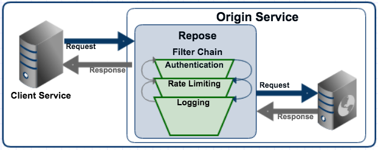
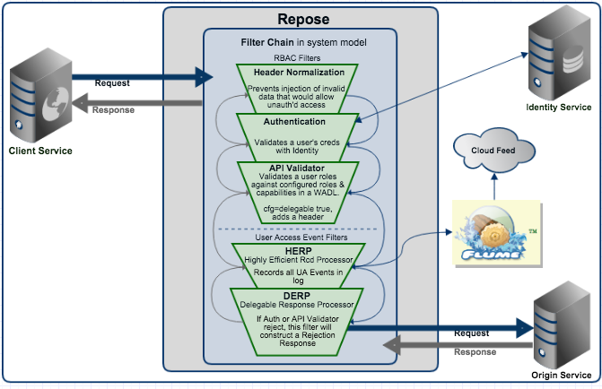
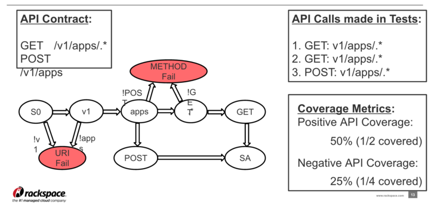
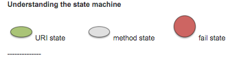
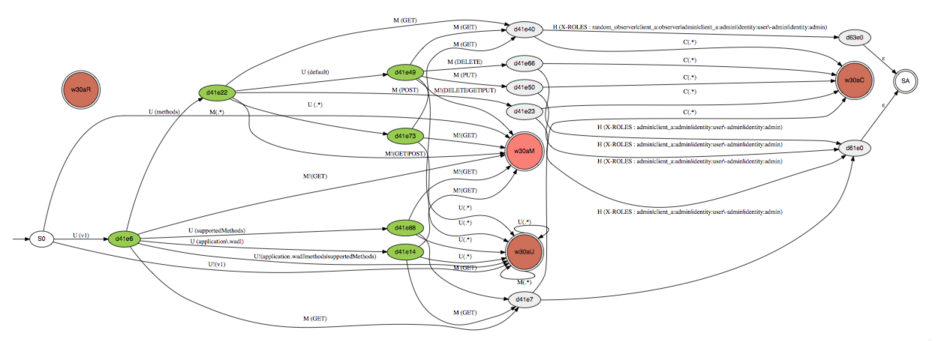

What is Repose?
How can it help you deliver faster?
Repose Development Team
Visit our website: www.openrepose.org
Agenda
- Introduction and Overview
- 2015 Features
- Authentication/Authorization
- User Access Events
- Rate Limiting
- API Coverage
- Repose Performance & Scaling
- What's Coming in 2016
Team Introduction
- Kari Davis - Dev Mgr/Product Mgr
- Adrian George - Tech Lead
- Damien Johnson - Developer
- Mario Lopez - Developer
- Bill Scheidegger - Developer
- Jenny Vo - QE
- Jorge Williams - Architect
- 3 in Austin, 4 @ the Castle
Repose Product Overview
Repose is a Reverse Proxy built on JEE Servlet Filters.
- Reusable features that save time in development
- Faster product deliveries with templated configs
- A layer of abstraction from underlying systems
- A product that is Battle Tested
- A system with Proven Performance
- An open source, Racker supported product
Repose Filters

| Authentication |
Rate Limiting |
Req/Resp Mods |
| Keystone |
By IP, IPs |
Add/Strip/Modify hdr |
| RBAC |
By Role |
Content Translation |
| Dedicated Auth |
By Header |
Hdr/URI Normalization |
Recent Features
- Valkyrie Dedicated Auth
- API Coverage Handler
- Tracing Header
- Log4j 2x Upgrade
- IRI Validator
- CORS Header support
- Keystone v2v2 rewrite
- Rate Limit by Multiple Groups
Repose and Authentication
- AuthN
- Impersonation Behavior
- Racker Tokens
- AuthZ
- Valkyrie for Dedicated Auth
- Account Admins
- List Culling
- RBAC
Repose User Access Events

API Coverage Documentation
- Uses Graphviz or a similar visualization tool
- When API Validator enable-api-coverage is true, API Validator will capture your application states
- Run the visualization tool using the .dot file created above

A Real API Coverage Graphic


Repose Performance
Tested on a Rackspace Performance 2GB VM
| PassThrough |
Common |
Most Complex |
| 8000 rps |
2000 rps |
2000 rps |
| 1ms overhead |
4-5ms overhead |
8ms overhead |
The internal Rackspace Keystone Identity Provider sees ~1000 rps.
We test double that to ensure Repose will support their highest traffic service.
Repose scales Horizontally and Vertically.
Additional Features
-
DataStore
- Local OR Distributed
- Currently only uses Ehcache
- Pure JSR-107 on backlog (swapping)
-
HTTP Connection Pooling
- Is configurable
- Supports special cases (e.g. long timeout)
- Default is one pool
-
Centralized Response Modification
- Provides consistent access to the Context for creating Response messages
Future Features
- Java8/Scala 2.11 Upgrade
- Repose Admin Tools
- Metrics Upgrade
- Versioned Docs
- Servlet Spec Compliance
- Phone Home Service
- Seamless Experience feature work
- Identity feature work
- Self Validating Tokens